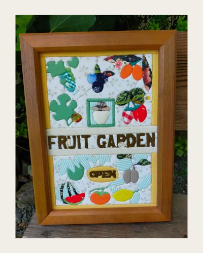

「Fruit Garden」
作品サイズ： 210mm × 297mm A4サイズ
真ん中にFRUIT GARDENの文字を、そして上下に夫が育てている10種類の果物を配置しました。
毎年たくさんの実を収穫できますように、そして、これからも元気で果物や野菜づくりができますようにという願いを込めて作成しました。

作品のつくり方については、momenブログ「100円ショップの貼れるボードで、きめこみパッチワーク作品をつくろう」をご覧ください
作品サイズ： 210mm × 297mm A4サイズ
真ん中にFRUIT GARDENの文字を、そして上下に夫が育てている10種類の果物を配置しました。
毎年たくさんの実を収穫できますように、そして、これからも元気で果物や野菜づくりができますようにという願いを込めて作成しました。
作品のつくり方については、momenブログ「100円ショップの貼れるボードで、きめこみパッチワーク作品をつくろう」をご覧ください